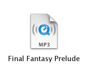

| This music is here to give you a window into my experimental world of playing with synthesizers. The most closely related genres are classical, electronic, and ambient, and often times a bizarre mixture of them. Unfortunately, I am not able to generate my own original tune for the same reason that I cannot generate my own original small-talk in social situations. So each of these songs comes from an existing tune, typically from video games. The part that comes from me is the instrument selection and style, which parts to bring forward and emphasize, adding notes symmetrical to those preexisting where needed, etc. |
|
Instrumental  Instrumental + Electronic Electronic |
|
|